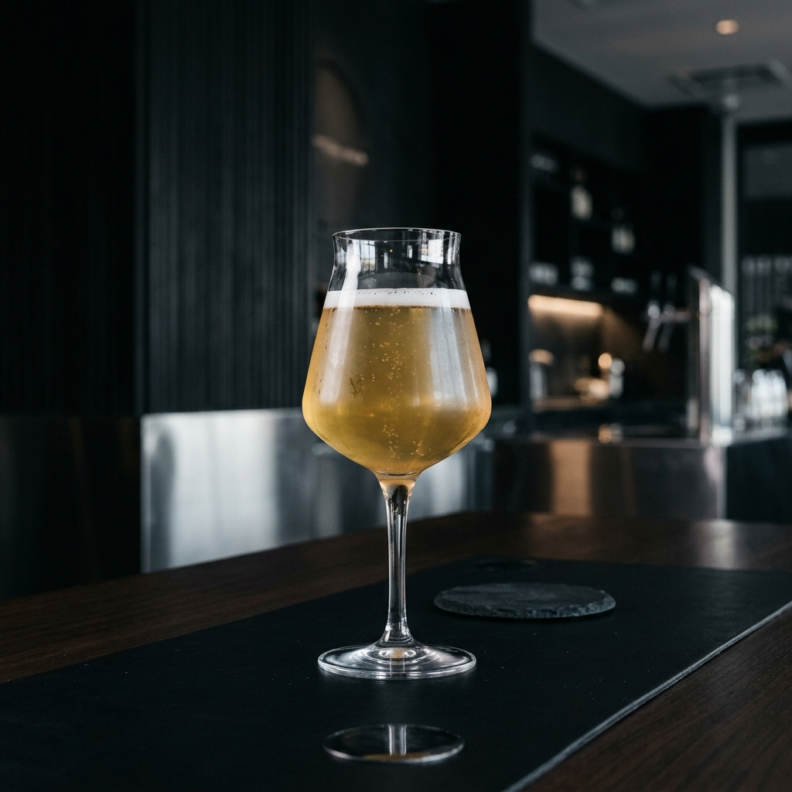
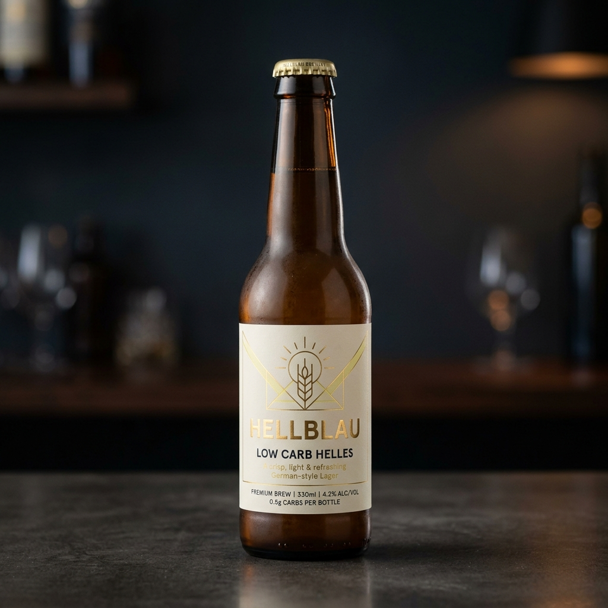
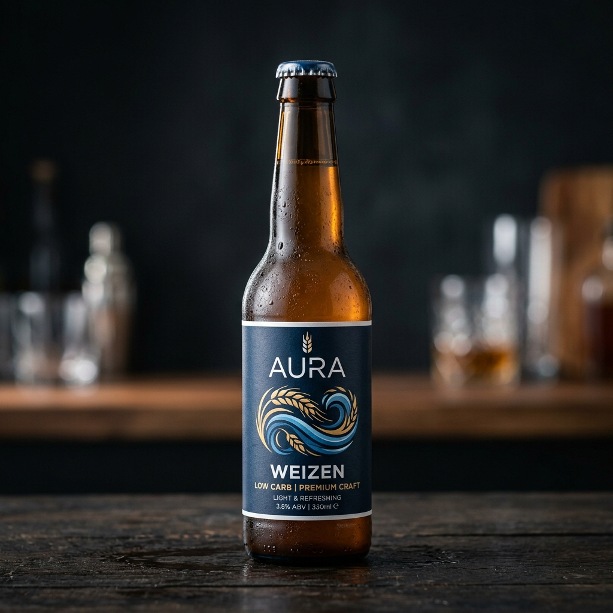
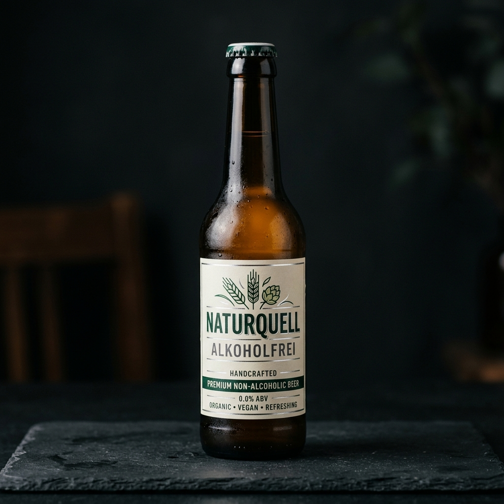

Für alle, die bewusst leben und trotzdem gern Bier trinken.
Voller Biergeschmack, aber mit deutlich reduzierten Kohlenhydraten. Der smarte Weg, Bier zu genießen.
Für aktive Menschen, die auf ihre Ernährung achten, aber abends nicht auf ein kühles Bier verzichten möchten.
Gebraut mit deutschem Qualitätsanspruch. Kein Diätprodukt, sondern ehrliches, erwachsenes Bier.

Klassisch. Süffig. Modern. Die schlanke Alternative zum normalen Hellen. Perfekt für den entspannten Feierabend ohne schlechtes Gewissen.

Frisch. Dynamisch. Modern. Das Weizenbier für aktive Genießer. Die perfekte Erfrischung nach dem Sport oder an warmen Sommertagen.

Frei genießen. Bewusst trinken. Modern alkoholfrei. Der unkomplizierte Genuss für alle, die einen klaren Kopf bewahren wollen.
Wir sind keine klassische Brauerei-Marke. Wir sind die moderne Bierlösung für 2026+.
LOW CARB BIER richtet sich an Männer und Frauen (25–50 Jahre), die Bier lieben, aber auf ihre Ernährung achten. Ob du Kohlenhydrate reduzierst, sportlich bist oder einfach nur eine smarte Alternative suchst – hier findest du Genuss ohne Hipster-Pathos oder Craft-Beer-Gelaber.
Einfach gutes Bier. Nur intelligenter.
Nein. Durch spezielle Brauverfahren behalten wir den vollen, charakteristischen Geschmack bei, entziehen dem Bier aber überschüssige Kohlenhydrate.
Absolut nicht. Es ist ein echtes Premium-Bier, das sich an Menschen richtet, die bewusst leben, aber nicht auf Genuss verzichten wollen. Kein Fitness-Shake-Image.
Wir bauen unser Händlernetzwerk aktuell in ganz Deutschland aus. Kontaktiere uns gerne, wenn du Händler werden möchtest oder schau demnächst in unserem Online-Shop vorbei.